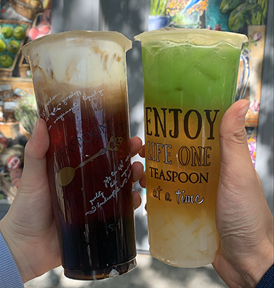

Game Design UX Best Practices
11/9/2021
Playing games is something I enjoy doing as a hobby. However, I never thought about UX/UI practices that make these experiences enjoyable. It includes knowing UI Positions, having different designs be most optimally used in game. These components could also help guide the users to understand where their next plan of actions are. Even in tutorials, having a good faded background could suggest the user to focus on something bright. What makes a game successful and interactive is the ability to make game choices. Having the option to include the user's decision that could affect the outcome of the game is what makes it enjoyable.
Specifically, games employ a lot of similar design patterns. The drag-drop interaction is an example of a simple, yet effective way for the user to engage with the components. Even having an invisible skip button would allow the users to skip through any parts of the games as they desire. Little microinteractions like these relate to user experience, and how an engaging game requires a mapping of how the users would interacte with the game. Overall, these are very simple, yet effective methods that game designers have used in games. These methods would be helpful in designing the Game On! project for this class.
Visual Thinking Part II
10/31/2021
 Jiaqi's Photograph
Jiaqi's Photograph
I think this image is about finding inspiration. When I look at the image, I see a girl holding flowers in a greyscale filter. Yet, somehow my intuition lets me see color in this image, as if the filter is not there. My mind is telling me that the flower is a golden yellow, and the room is illuminated with rays of yellow sun. Perhaps this person is trying to find color within herself when there is no color in her environment.
When I see this image, I think of an infinite realm of possibilities. This image is fascianting because theres a lot of possible meanings to this picture. Her facial expressions could suggest that shes curious about something, or even contemplating about life. I love this image because it presents itself as an ambigious picture with many meanings. Yet, there is no right or wrong answer since it is up to my own interpretation. I think the most obvious aspects of this image is that there is a girl holding a flower staring at a distance. However, the most mysterious aspect of this image is that "what is she thinking about?" Is she thinking about the world? The flower? Herself? Who knows? That is the beauty of this photograph because its a story with endless meanings. And I think Jiaqi greatly photographed this image as a story only we, as the reader, can interpret.
Visual Thinking Part I
10/31/2021

Enjoy life one Teaspoon at a Time
I am super excited to use this image because there is a lot of story behind it. It's the summer of 2021, a time when things are still getting better from the pandemic. My friend and I met up after not seeing each other for so long during quarantine, and it was an exciting day for us. We went to Teaspoon, a local Davis Boba shop that has delicious tea flavors and toppings. While we were ordering, we talked about our life goals and began to imagine our future in the next 2 years. Of course, now that we're seniors, our responsibilities are hitting us really quickly. But, we got this drink with the text,"Enjoy life One Teaspoon at a Time", and it really placed us into perspective. Things are happening really quickly, but we have to take things slowly and enjoy our last bit of time at Davis while we can.
This image relates to my collectiom because every drink picture documentation is a day of celebration. In this picture, we celebrated our health and good mental well-beings. I also think the colors of our drink represents our happiness because it was really rare to see colors when you are in doors all the time. I think this collection represents who I am as a person. I enjoy spending time with people I care about by grabbing a boba drink at a tea shop. It's a tradition that I practice whenever I have not seen a person in a long time. So, I try to take pictures of every drink I've had so I can remember my memories with my friends.
10 Intriguing Photographs to Teach Close Reading and Visual Thinking
10/19/2021
New York Times "10 Intriguing Photographs to Teach Close Reading and Visual Thinking" teaches a lot about visual communication through images. The article mentioned that we should employ certain practices when using images on the web. We have to pay great attention to the picture and capture small details that would lead to a bigger picture. We should always see the images as how it is, help the readers focus on the main picture. Good pictures should always have something that can leave the readers with thoughts and questions. For example, what is the story that they are telling?
Pictures can leave the readers with a big question in their head. The readers should always use clues within the photograph to figure out the story. With this, it can be an effective storytelling device. Perhaps it can be used to send a message to the audience. Or even, it could strike new conversations about fascinating details that the readers might notice. Regardless, there is an immense amount of creativity that the designer can use to employ an effective storytelling using photographs.
Best Practices for Modals/Overlays/Dialog Windows
10/19/2021
I read Best Practices for Modals/Overlays/Dialog Windows. To start, a modal window is "an element that sits on top of an application's main window". Simply, this modal window has many different uses. It is a tool to acquire user input, or show any additional information that is useful to navigate through the page. It may also give the users options to view show other pages. Regardless, there are many different uses behind the structure of the page.
The Best practices for form design should always have options for the users to escape the web. This includes using buttons to escape or backtrack progress that the user has made on the web. The web should always have directions for the user to input information. Sizing and location should always guide the user experience by fitting the most important information in a convenient way. Initiate the users by promoting them to let the users take action over their screens. Be aware of accessibility for the users to take actions on the page.
Best Practices for form design
10/17/2021
There are a lot of different ways to improve the legibility and user experience of websites. These methods focus on the designer’s decision to improve the layout of content and images. One thing that struck out me is to always “ask the easy questions first”. Instead of asking a dense question first, we can ask the easier questions to prevent intimidation of the readers. There should always be requirements for the users in case the system cannot pick up any inputs and cannot give the users feedback on their next steps. Be very transparent with the users about how their information will be used. The website should always employ user experience principles, which include accessibility features to deliver effective communication.